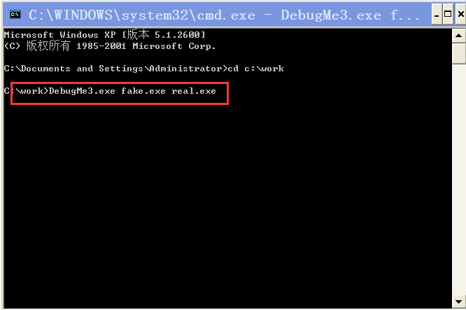
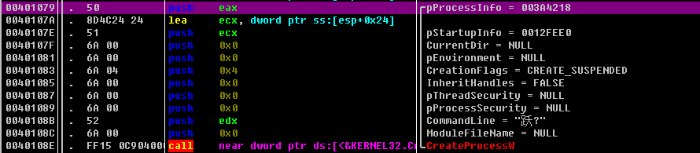

先运行某个进程 然后将其虚拟内存中的PE映像切换到另外一个映像 这称为PE映像切换
PE映像
代码逆向分析中有个常用术语为“PE映像”(或者Process Image(进程映像)或Image(映像))。简言之，“PE映像”就是PE文件在进程内存中的映射形态( 参考下图 )。
PE文件( notepad.exe )以进程形式运行时，其进程的虚拟内存如上图所示。OS先为进程开辟虚拟内存空间，然后将notepad.exe文 件映射到USER内存空间，并且notepad.exe中使用的导出DLL文件( kernel32.dll、user32.dll、 gdi32.dIl等)也会依次映射进来。此时映射在进程USER内存空间中的Notepad.exe区域称为( notepad.exe文件的) PE映像。PE文件与PE映像形态不同，差异如下图.
一般而言，PE文件①File Alignment (文件对齐)与Section Alignment (节区对齐)是不同的，②各节区中的Raw Data Size ( 原始数据大小)与Virtual Size ( 虚拟大小)也是不同的，所以PE文件与PE映像在形态上会有不同，如下图所示。
PE映像切换
PE映像切换是种非常神奇的技术，应用时先以挂起模式运行某个进程( A.exe),然后将完全不同的一个PE文件( B.exe)的PE映像映射到A.exe进程内存空间，并在A.exe进程的内存空间中运行。
修改PE映像后，进程名称仍为原来的A.exe,但实际映射在进程内存中的PE映像为B.exe,所以最终会产生与原来( A.exe)完全不同的行为动作。此时，A.exe为“外壳进程”，实际运行的B.exe为“内核进程”(参考下图)。
示例程序：Fake.exe Real.exe DebugMe3.exe
首先运行fake.exe程序的画面如图
fake.exe是基于GUI的程序 用来在控制台输出简单的字符串 接下来运行real.exe程序的画面如图：
real.exe是基于GUI的程序，用来在图形窗口输出简单的字符串。从上面运行画面可以看到，fake.exe与real.exe程序拥有不同的用户环境。接下来，我们将运用PE映像切换技术，尝试以“外壳进程”形式运行fake.exe,以“内核进程”形式运行real.exe。打开控制台窗口,运行DebugMe3.exe程序，如下图所示(请务必输人正确的运行参数)。
在控制台窗口输入运行命令时，命令的第一个参数为充当“外壳进程”的可执行文件路径( fake.exe),第二个参数为充当“内核进程”的可执行文件路径( real.exe )。

然后查看fake.exe的应用进程 如下图所示：
从图中可以看到 运行的进程明明为fake.exe 但实际运行的却是real.exe进程 DebugMe3.exe进程删除了fake.exe的PE映像 将real.exe的PE映像映射到fake.exe的进程内存空间并运行。
调试1
Open-输入运行参数
首先在OD中的”打开“对话框选择DebugMe3.exe程序 输入运行参数 然后单击“打开”按钮
main()函数
main（）函数代码很长1
2
3
4
5
6
7
8
9
10
11
12
13
14
15
16
17
18
19
20
21
22
23
24
25
26
27
28
29
30
31
32
33
34
35
36
37
38
39
40
41
42
43
44
45
46
47
48
49
50
51
52
53
54
55
56
57
58
59
60
61
62
63
64
65
66
67
68
69
70
71
72
73
74
75
76
77
78
79
80
81
82
83
84
85
86
87
88
89
90
91
92
93
94
95
96
97
98
99
100
101
102
103
104
105
106
107
108
109
110
111
112
113
114
115
116
11700401000 55 push ebp
00401001 8BEC mov ebp, esp
00401003 |. 83E4 F8 and esp, 0xFFFFFFF8
00401006 |. 83EC 5C sub esp, 0x5C
00401009 |. 53 push ebx
0040100A |. 56 push esi
0040100B |. 57 push edi
0040100C |. 6A 40 push 0x40
0040100E |. 8D4424 28 lea eax, dword ptr ss:[esp+0x28]
00401012 |. 6A 00 push 0x0
00401014 |. 50 push eax
00401015 |. C74424 2C 440>mov dword ptr ss:[esp+0x2C], 0x44
0040101D |. E8 CE450000 call DebugMe3.004055F0
00401022 |. 33C0 xor eax, eax
00401024 |. 83C4 0C add esp, 0xC
00401027 |. 837D 08 03 cmp [arg.1], 0x3
0040102B |. C74424 10 000>mov dword ptr ss:[esp+0x10], 0x0
00401033 |. 894424 14 mov dword ptr ss:[esp+0x14], eax
00401037 |. 894424 18 mov dword ptr ss:[esp+0x18], eax
0040103B |. 894424 1C mov dword ptr ss:[esp+0x1C], eax
0040103F |. 74 1C je short DebugMe3.0040105D
00401041 |. 8B4D 0C mov ecx, [arg.2]
00401044 |. 8B11 mov edx, dword ptr ds:[ecx]
00401046 |. 52 push edx ; DebugMe3.0040DA90
00401047 |. 68 E0B14000 push DebugMe3.0040B1E0 ; ASCII "USAGE : %s <fake file path> <real file path>\n"
0040104C |. E8 BC040000 call DebugMe3.0040150D
00401051 |. 83C4 08 add esp, 0x8
00401054 |. 33C0 xor eax, eax
00401056 |. 5F pop edi ; DebugMe3.004017D8
00401057 |. 5E pop esi ; DebugMe3.004017D8
00401058 |. 5B pop ebx ; DebugMe3.004017D8
00401059 |. 8BE5 mov esp, ebp
0040105B |. 5D pop ebp ; DebugMe3.004017D8
0040105C |. C3 retn
0040105D |> 8B75 0C mov esi, [arg.2]
00401060 |. 8B46 08 mov eax, dword ptr ds:[esi+0x8]
00401063 |. E8 E8000000 call DebugMe3.00401150 ; SubFunc_1
00401068 |. 8BF8 mov edi, eax
0040106A |. 85FF test edi, edi
0040106C |. 0F84 D2000000 je DebugMe3.00401144
00401072 |. 8B56 04 mov edx, dword ptr ds:[esi+0x4]
00401075 |. 8D4424 10 lea eax, dword ptr ss:[esp+0x10]
00401079 |. 50 push eax ; /pProcessInfo = 003A30C0
0040107A |. 8D4C24 24 lea ecx, dword ptr ss:[esp+0x24] ; |
0040107E |. 51 push ecx ; |pStartupInfo = 00000001
0040107F |. 6A 00 push 0x0 ; |CurrentDir = NULL
00401081 |. 6A 00 push 0x0 ; |pEnvironment = NULL
00401083 |. 6A 04 push 0x4 ; |CreationFlags = CREATE_SUSPENDED
00401085 |. 6A 00 push 0x0 ; |InheritHandles = FALSE
00401087 |. 6A 00 push 0x0 ; |pThreadSecurity = NULL
00401089 |. 6A 00 push 0x0 ; |pProcessSecurity = NULL
0040108B |. 52 push edx ; |CommandLine = "粙.."
0040108C |. 6A 00 push 0x0 ; |ModuleFileName = NULL
0040108E |. FF15 0C904000 call near dword ptr ds:[<&KERNEL32.Cr>; \CreateProcessW
00401094 |. 85C0 test eax, eax
00401096 |. 75 16 jnz short DebugMe3.004010AE
00401098 |. FF15 24904000 call near dword ptr ds:[<&KERNEL32.Ge>; [GetLastError
0040109E |. 50 push eax
0040109F |. 68 60B14000 push DebugMe3.0040B160 ; ASCII "CreateProcess() failed! [%d]\n"
004010A4 |. E8 64040000 call DebugMe3.0040150D
004010A9 |. 83C4 08 add esp, 0x8
004010AC |. EB 71 jmp short DebugMe3.0040111F
004010AE |> 8D7424 10 lea esi, dword ptr ss:[esp+0x10]
004010B2 |. E8 19010000 call DebugMe3.004011D0 ; SubFunc_2
004010B7 |. 85C0 test eax, eax
004010B9 |. 75 0F jnz short DebugMe3.004010CA
004010BB |. 68 80B14000 push DebugMe3.0040B180 ; ASCII "UnmapFakeProcImage() failed!!!\n"
004010C0 |. E8 48040000 call DebugMe3.0040150D
004010C5 |. 83C4 04 add esp, 0x4
004010C8 |. EB 55 jmp short DebugMe3.0040111F
004010CA |> 8D4424 10 lea eax, dword ptr ss:[esp+0x10]
004010CE |. 50 push eax ; /Arg1 = 003A30C0 ASCII "@1:"
004010CF |. 8BDF mov ebx, edi ; |
004010D1 |. E8 4A020000 call DebugMe3.00401320 ; SubFunc_3
004010D6 |. 83C4 04 add esp, 0x4
004010D9 |. 85C0 test eax, eax
004010DB |. 75 0F jnz short DebugMe3.004010EC
004010DD |. 68 A0B14000 push DebugMe3.0040B1A0 ; ASCII "MapRealProcImage() failed!!!\n"
004010E2 |. E8 26040000 call DebugMe3.0040150D
004010E7 |. 83C4 04 add esp, 0x4
004010EA |. EB 33 jmp short DebugMe3.0040111F
004010EC |> 8B4C24 14 mov ecx, dword ptr ss:[esp+0x14]
004010F0 |. 51 push ecx ; /hThread = 00000001
004010F1 |. FF15 38904000 call near dword ptr ds:[<&KERNEL32.Re>; \ResumeThread
004010F7 |. 83F8 FF cmp eax, -0x1
004010FA |. 75 16 jnz short DebugMe3.00401112
004010FC |. FF15 24904000 call near dword ptr ds:[<&KERNEL32.Ge>; [GetLastError
00401102 |. 50 push eax
00401103 |. 68 C0B14000 push DebugMe3.0040B1C0 ; ASCII "ResumeThread() failed! [%d]\n"
00401108 |. E8 00040000 call DebugMe3.0040150D
0040110D |. 83C4 08 add esp, 0x8
00401110 |. EB 0D jmp short DebugMe3.0040111F
00401112 |> 8B5424 10 mov edx, dword ptr ss:[esp+0x10]
00401116 |. 6A FF push -0x1 ; /Timeout = INFINITE
00401118 |. 52 push edx ; |hObject = 0040DA90
00401119 |. FF15 10904000 call near dword ptr ds:[<&KERNEL32.Wa>; \WaitForSingleObject
0040111F |> 57 push edi
00401120 |. E8 A5040000 call DebugMe3.004015CA
00401125 |. 8B4424 14 mov eax, dword ptr ss:[esp+0x14]
00401129 |. 8B35 30904000 mov esi, dword ptr ds:[<&KERNEL32.Cl>; kernel32.CloseHandle
0040112F |. 83C4 04 add esp, 0x4
00401132 |. 85C0 test eax, eax
00401134 |. 74 03 je short DebugMe3.00401139
00401136 |. 50 push eax ; /hObject = 003A30C0
00401137 |. FFD6 call near esi ; \CloseHandle
00401139 |> 8B4424 14 mov eax, dword ptr ss:[esp+0x14]
0040113D |. 85C0 test eax, eax
0040113F |. 74 03 je short DebugMe3.00401144
00401141 |. 50 push eax
00401142 |. FFD6 call near esi
00401144 |> 5F pop edi ; DebugMe3.004017D8
00401145 |. 5E pop esi ; DebugMe3.004017D8
00401146 |. 33C0 xor eax, eax
00401148 |. 5B pop ebx ; DebugMe3.004017D8
00401149 |. 8BE5 mov esp, ebp
0040114B |. 5D pop ebp ; DebugMe3.004017D8
0040114C \. C3 retn
代码流程图
根据上述代码画出main（）函数的代码流程图：
由于CreateProcess（）与ResumeThread（）API的行为动作非常明确 所以下面调试main（）调用的3个子函数(SubFunc_1~3)为主
SubFunc_1（）
我们将代码运行至SubFunc_1（）函数处 然后步入函数 代码如图：
SunFunc_ 1()函数内部仅调用了Win32 API,没有调用其他子函数。SunFunc_ 1()函数用来将real.exe文件整个读人内存，此后，内存中存储的就是real.exe文件的内容。为了方便，我们将该内存地址称为MEM_ FILE REAL EXE。SunFunc _1()函数执行完成后，执行程序将其返回main()函数。
CreateProcess(“fake.exe”,CREATE_SUSPENDED)
程序执行至main（）函数的401079地址处 出现调用CreateProcess（）API代码

上面代码用来创建fake.exe的进程 其参数CREATE_SUSPENDED用来指定该进程处于挂起状态 进程被挂起时处于暂停状态 此时可以自由操作对应的内存
SubFunc_2（）
下面进入SubFunc_2（）的代码1
2
3
4
5
6
7
8
9
10
11
12
13
14
15
16
17
18
19
20
21
22
23
24
25
26
27
28
29
30
31
32
33
34
35
36
37
38
39
40
41
42
43
44
45
46
47
48
49
50
51
52
53
54
55
56
57
58
59
60
61
62
63
64
65
66
67
68
69
70
71
72
73
74
75
76
77
78
79
80
81
82
83
84
85
86
87
88
89
90
91
92
93
94
95
96
97
98
99
100
101
102004011D0 /$ 55 push ebp
004011D1 |. 8BEC mov ebp, esp
004011D3 |. 81EC D4020000 sub esp, 0x2D4
004011D9 |. A1 3CC04000 mov eax, dword ptr ds:[0x40C03C]
004011DE |. 33C5 xor eax, ebp
004011E0 |. 8945 FC mov [local.1], eax
004011E3 |. 68 C8020000 push 0x2C8
004011E8 |. 8D85 34FDFFFF lea eax, [local.179]
004011EE |. 6A 00 push 0x0
004011F0 |. 50 push eax
004011F1 |. C785 2CFDFFFF>mov [local.181], 0x0
004011FB |. E8 F0430000 call DebugMe3.004055F0
00401200 |. 8B56 04 mov edx, dword ptr ds:[esi+0x4]
00401203 |. 83C4 0C add esp, 0xC
00401206 |. 8D8D 30FDFFFF lea ecx, [local.180]
0040120C |. 51 push ecx ; /pContext = kernel32.7C818A12
0040120D |. 52 push edx ; |hThread = 7C92E514
0040120E |. C785 30FDFFFF>mov [local.180], 0x10007 ; |
00401218 |. FF15 00904000 call near dword ptr ds:[<&KERNEL32.Ge>; \GetThreadContext
0040121E |. 85C0 test eax, eax
00401220 |. 75 24 jnz short DebugMe3.00401246
00401222 |. FF15 24904000 call near dword ptr ds:[<&KERNEL32.Ge>; [GetLastError
00401228 |. 50 push eax
00401229 |. 68 10B24000 push DebugMe3.0040B210 ; ASCII "GetThreadContext() failed! [%d]\n"
0040122E |. E8 DA020000 call DebugMe3.0040150D
00401233 |. 83C4 08 add esp, 0x8
00401236 |. 33C0 xor eax, eax
00401238 |. 8B4D FC mov ecx, [local.1] ; DebugMe3.00403CC5
0040123B |. 33CD xor ecx, ebp
0040123D |. E8 BC020000 call DebugMe3.004014FE
00401242 |. 8BE5 mov esp, ebp
00401244 |. 5D pop ebp ; DebugMe3.004010B7
00401245 |. C3 retn
00401246 |> 8B8D D4FDFFFF mov ecx, [local.139]
0040124C |. 8B16 mov edx, dword ptr ds:[esi]
0040124E |. 6A 00 push 0x0 ; /pBytesRead = NULL
00401250 |. 6A 04 push 0x4 ; |BytesToRead = 0x4
00401252 |. 8D85 2CFDFFFF lea eax, [local.181] ; |
00401258 |. 50 push eax ; |Buffer = 00000001
00401259 |. 83C1 08 add ecx, 0x8 ; |
0040125C |. 51 push ecx ; |pBaseAddress = 0x7C818A12
0040125D |. 52 push edx ; |hProcess = 7C92E514
0040125E |. FF15 18904000 call near dword ptr ds:[<&KERNEL32.Re>; \ReadProcessMemory
00401264 |. 85C0 test eax, eax
00401266 |. 75 24 jnz short DebugMe3.0040128C
00401268 |. FF15 24904000 call near dword ptr ds:[<&KERNEL32.Ge>; [GetLastError
0040126E |. 50 push eax
0040126F |. 68 34B24000 push DebugMe3.0040B234 ; ASCII "ReadProcessMemory() failed! [%d]\n"
00401274 |. E8 94020000 call DebugMe3.0040150D
00401279 |. 83C4 08 add esp, 0x8
0040127C |. 33C0 xor eax, eax
0040127E |. 8B4D FC mov ecx, [local.1] ; DebugMe3.00403CC5
00401281 |. 33CD xor ecx, ebp
00401283 |. E8 76020000 call DebugMe3.004014FE
00401288 |. 8BE5 mov esp, ebp
0040128A |. 5D pop ebp ; DebugMe3.004010B7
0040128B |. C3 retn
0040128C |> 8B47 3C mov eax, dword ptr ds:[edi+0x3C]
0040128F |. 8B4C38 34 mov ecx, dword ptr ds:[eax+edi+0x34]
00401293 |. 8D4438 34 lea eax, dword ptr ds:[eax+edi+0x34]
00401297 |. 3B8D 2CFDFFFF cmp ecx, [local.181]
0040129D |. 75 4B jnz short DebugMe3.004012EA
0040129F |. 68 58B24000 push DebugMe3.0040B258 ; /ProcNameOrOrdinal = "ZwUnmapViewOfSection"
004012A4 |. 68 70B24000 push DebugMe3.0040B270 ; |/pModule = "ntdll.dll"
004012A9 |. FF15 14904000 call near dword ptr ds:[<&KERNEL32.Ge>; |\GetModuleHandleW
004012AF |. 50 push eax ; |hModule = 00000001
004012B0 |. FF15 28904000 call near dword ptr ds:[<&KERNEL32.Ge>; \GetProcAddress
004012B6 |. 8B95 2CFDFFFF mov edx, [local.181]
004012BC |. 8B0E mov ecx, dword ptr ds:[esi]
004012BE |. 52 push edx ; ntdll.KiFastSystemCallRet
004012BF |. 51 push ecx ; kernel32.7C818A12
004012C0 |. FFD0 call near eax
004012C2 |. 85C0 test eax, eax
004012C4 |. 74 3C je short DebugMe3.00401302
004012C6 |. FF15 24904000 call near dword ptr ds:[<&KERNEL32.Ge>; [GetLastError
004012CC |. 50 push eax
004012CD |. 68 84B24000 push DebugMe3.0040B284 ; ASCII "ZwUnmapViewOfSection() failed!!! [%d]\n"
004012D2 |. E8 36020000 call DebugMe3.0040150D
004012D7 |. 83C4 08 add esp, 0x8
004012DA |. 33C0 xor eax, eax
004012DC |. 8B4D FC mov ecx, [local.1] ; DebugMe3.00403CC5
004012DF |. 33CD xor ecx, ebp
004012E1 |. E8 18020000 call DebugMe3.004014FE
004012E6 |. 8BE5 mov esp, ebp
004012E8 |. 5D pop ebp ; DebugMe3.004010B7
004012E9 |. C3 retn
004012EA |> 8B95 D4FDFFFF mov edx, [local.139]
004012F0 |. 6A 00 push 0x0 ; /pBytesWritten = NULL
004012F2 |. 6A 04 push 0x4 ; |BytesToWrite = 0x4
004012F4 |. 50 push eax ; |Buffer = 00000001
004012F5 |. 8B06 mov eax, dword ptr ds:[esi] ; |
004012F7 |. 83C2 08 add edx, 0x8 ; |
004012FA |. 52 push edx ; |Address = 0x7C92E514
004012FB |. 50 push eax ; |hProcess = 00000001
004012FC |. FF15 34904000 call near dword ptr ds:[<&KERNEL32.Wr>; \WriteProcessMemory
00401302 |> 8B4D FC mov ecx, [local.1] ; DebugMe3.00403CC5
00401305 |. 33CD xor ecx, ebp
00401307 |. B8 01000000 mov eax, 0x1
0040130C |. E8 ED010000 call DebugMe3.004014FE
00401311 |. 8BE5 mov esp, ebp
00401313 |. 5D pop ebp ; DebugMe3.004010B7
00401314 \. C3 retn
SubFunc_2（）函数内部调用了PE映像切换技术
获取fake.exe的实际映像地址
在401218地址处调用GetThreadContext()API 获取fake.exe进程的主线程上下文
获取fake.exe进程的主线程上下文后 通过它来获取进程的PEB 然后再由PEB.ImageBase得到进程的实际映射地址（进程的实际映射地址存储在PEB.ImageBase成员） 在40125E地址处调用ReadProcessMemory（）API来获取fake.exe进程的映射地址
当前fake.exe进程是以挂起模式创建的 处于暂停状态
进程被创建出来 PE装载器就会对PEB结构体的地址设置给EBX寄存器 所以 要获取EBX寄存器的值必须先获取主线程的上下文 如下图：
获取real.exe文件的ImageBase
40128c 40128f地址处的指令用来读取real.exe文件的PE文件头信息 获取ImageBase
EDI寄存器的值为MEM_ FILE_ REAL EXE地址(该地址是在SubFunc_ 10)中分配得到的内存起始地址，real.exe 文件的内容被原封不动地保存其中)。也就是说，EDI指向real.exe文件的PE文件头。所以EDI+3C指的就是IMAGE_ DOS_ HEADER结构体的e_ lfanew成员( IDH.e_ lfanew)， 上述指令用来将它的值保存到EAX。

上面的指令中, EAX+EDI=IDH.e_ lfanew+Start of PE是IMAGE NT HEADER结构体的起始地址，EAX+EDI+34指的是IMAGE_ OPTION HEADER.ImageBase成员。执行上述指令后，real.exe文件的ImageBase值将被存人ECX寄存器
比较：ImageBase of fake.exe&ImageBase of real.exe
比较 fake.exe进程的实际映射地址与real.exe的ImageBase
比较2个ImageBase的值 并根据结果确定要执行的分支 若相同 则跳转到40129f处 否则跳转到4012EA处
两值相同时
如上图所示，此种情形下，fake .exe的PE映像已经映射到00000地址处，地址00000也是real.exe的PE映像要映射的地址。若将real.exe强 行映射到该地址处，就会发生冲突，所以必须先卸载( Unmapping ) fake.exe的PE映像的映射。由于fake. exe进程处于挂起状态，所以卸载PE映像时进程中也不会发生错误。
卸载进程的PE映像时 调用的是ntdll！ZwUnmapViewOfSection()API 其函数原型如下
两值不同时
如上图所示，2个ImageBase值不同时，不必非得卸载fake.exe的PE映像，可以先在fake.exe进程的虚拟内存空间中为real.exe的PE映像分配所需空间，然后将real.exe映射进去就可以了。接下来还要告知PE装载器，fake.exe进程的PE映像是40000地址处的real.exe,而不是000000地址处的fake.exe。简单修改PEB的ImageBase成员即可。
以上代码调用了4012FC地址处的WriteProcessMemory()API 将fake.exe进程的PEB.ImageBase值修改为real.exe文件的ImageBase值。
经过以上的操作 fake.exe进程的PE映像就被卸载（PEB.ImageBase）了 即fake.exe进程的PE映像被删除了。
SubFunc_3（）
接下来要把real.exe文件映射到fake.exe进程 main（）函数的4010D1地址处是调用Subfunc_3()函数的指令 步入该函数
为real.exe的PE映像分配内存
这里我们在401383地址处遇到调用VirtualAllocEx()函数指令
此时查看存储在栈中的函数参数。函数的第二个参数为欲分配的内存起始地址,其值为real.exe的ImageBase ( 400000 );函数的第三个参数Arg3为欲分配的内存大小，其值为real.exe的SizeOflmage ( A000)。总之，调用VirtualAllocEx() API后，即在fake.exe进 程中为real.exe的PE映像分配了内存空间
映射PE文件头
为real.exe的PE映像分配好内存后 接下来就要将real.exe映射到fake.exe进程
如下图所示 在401405地址处调用WriteProcessMemory()API 将real.exe的PE文件头写入刚刚分配的内存区域（3A5218地址既是real.exe文件（MEN_FILE_REAL_EXE）由SubFunc_1()函数读入）
映射PE节区
接下来映射PE节区（PE Section）了
启动循环，根据节区数量反复调用WriteProcessMemory( API (上图为部分循环代码),映射PE节区。该过程需要的信息(地址、大小等)是读取PE文件头的IMAGE SECTION HEADER获取的(请各位亲自调试并确认)。上述循环结束后,real.exe文件即被完全映射至fake.exe进程的40000地址处( real.exe的ImageBase )。但是此时real.exe代码还无法正常运行,需要修改进程的EP。
修改EP
当前fake.exe进程处于挂起状态 将其恢复运行后 进程的主线程会运行到何处？我们首先得获取主线程的CONTEXT结构体 然后查看其Eip成员值
如上图所示 在401442地址处调用GetThreadContext()API 获取fake.exe进程的主线程的CONTEXT结构体
可将上述代码的执行过程整理为:处于挂起状态的fake. exe进程恢复运行后，首先会调用ntdll.RtlUserThreadStart() API( CONTEXT.Eip ),跳转至EP地址处( CONTEXT.Eax )。由于前面已经将fake.exe进程的PE映像替换为real.exe,所以需要将CONTEXT.Eax修改为realexe的EP地址( 401060 )。
观察下图中的代码，位于4014A2~4014A5地址处的MOV、ADD指令用来将401 060地址(real.exe的EP地址)设置到EDX寄存器。而4014B3地址处的MOV指令又将该地址值传送到[EBP-220] ( CONTEXT.Eax )。然后调用SetThreadContext() API,将更改应用到fake.exe进程。这样就将fake.exe进程的PE映像由原来的fake.exe更换为real.exe。
ResumeThread()
最后 调用ResumeThread() 恢复运行fake.exe进程
如图 让拥有real.exe的PE映像核心的fake.exe进程重新运行起来
调试2
下面进行fake.exe进程的调试
方法
将real.exe文件映射到fake.exe进程前，向real.exe的EP代码设置无限循环。向fake. exe进程映射完real.exe文件并恢复运行时，它的EP代码会被执行,导致程序运行陷人已设置好的无限循环。此时，借助调试器的附加功能将其附加到调试器即可调试。
向EP设置无限循环
如图所示，借助Stud PE工具查看,获知real.exe文件的EP偏移为1060。SubFunc_ 10函数负责将real.exe文件读人内存，所以只要在EP处设置无限循环代码就可以了
先在调试器中打开DebugMe3.exe ，然后调试运行到4011B5地址处，如图所示 。
缓冲区的起始地址为5c27f0 raal.exe的偏移量为1060 将二者相加得到real.exe的EP代码的实际地址5c3850
然后将EP代码的前两个字节558B改为EBFE
然后F9运行程序到最后 fake.exe进程就会进入无限循环 再打开新的调试器 用Attach命令附加进程对话框
然后代码就停到了EP代码处的无限循环
将其恢复原来指令的代码（558B）
接下来就可以对fake.exe进程进行调试了~
总结
学习了PE映像切换技术，借助这种神奇的技术可以将B进程作为“内核”加载到充当“外壳”的A进程，并在其中正常运行。该技术不但作为反调试技术应用于PE保护器，也常常被恶意代码用来将自己伪装成正常程序。